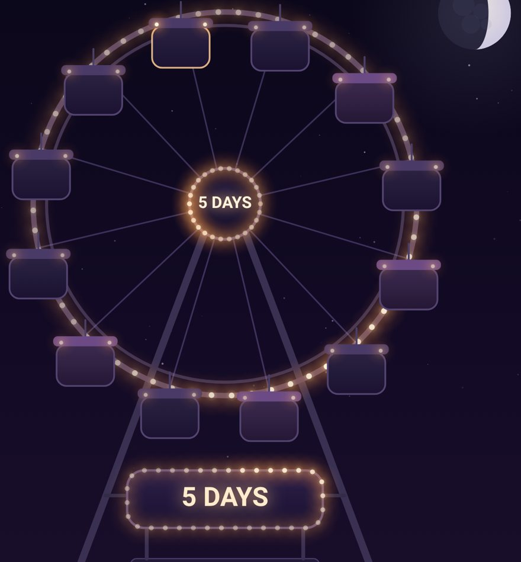

PREVIEW
Banjo Spirits

A quiet place to remember someone,
and to look for someone you have lost.
🕯️
Remember someone
Light a candle with their name. It burns five days.
🏮
Look for someone
Hang a lantern. Someone walking the valley may know something.
Free. No account needed.
Other places here
🎡 Ride the wheel
🌲 The forest
✨ The sky
📖 The Night Book
🪕 Play the banjo